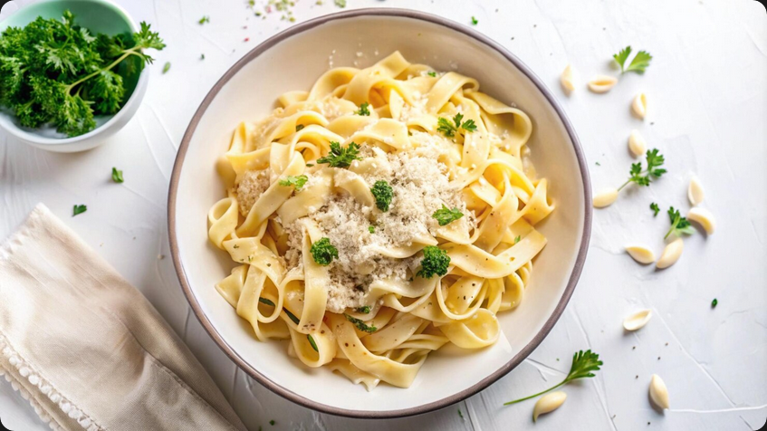

Garlic Pasta

This pasta is a simple yet aromatic dish, where tender noodles are
coated in a silky sauce infused with golden sautéed garlic. The olive oil
carries the rich fragrance of the cloves, blending with a hint of butter to
create a smooth, comforting base. A sprinkle of Parmesan adds a nutty depth,
while fresh herbs brighten the flavor, making each bite both hearty and refreshing.
It’s a warm, inviting recipe that transforms everyday ingredients into a satisfying
meal perfect for any occasion.
Ingredients
- 1 (16 ounce) package dry penne pasta
- ½ cup olive oil
- 1 medium head garlic, peeled and chopped
- 2 tablespoons chopped fresh parsley
- 1 tablespoon chopped fresh basil
- 1 tablespoon chopped fresh oregano
- 1 tablespoon red pepper flakes
- 1 cup grated Parmesan cheese
Steps:
- Gather all ingredients.
- Bring a large pot of lightly salted water to a boil. Add penne and cook, stirring occasionally, until tender yet firm to the bite, 8 to 10 minutes.
- While the pasta is cooking, add oil and garlic to a large skillet over low heat. Cook until oil is hot and garlic is sizzling, 8 to 12 minutes. Remove from the heat and stir in parsley, basil, oregano, and pepper flakes.
- Drain pasta and transfer to a large bowl. Add oil and garlic mixture, toss to coat, and let sit for 3 to 5 minutes. Sprinkle with Parmesan and serve.
- Enjoy!